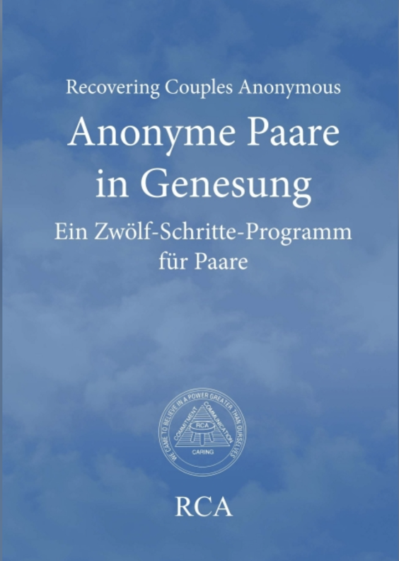
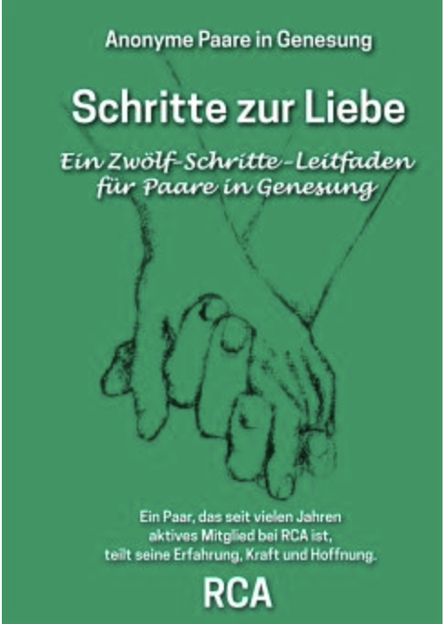

RCA (Paare in Genesung) steht allen erwachsenen Paaren offen, die in ihrer Partnerschaft verbindlich sind und eine liebevolle, verbindliche und intime monogame Beziehung anstreben, wobei Alter, sexuelle Orientierung, Geschlechtsidentifizierung, Religion, Kultur, Rasse, Klasse, Herkunft, physische oder geistige Fähigkeiten oder Parteizugehörigkeit keine Rolle spielen. Wir sind eine Gemeinschaft von Paaren auf dem Weg der Genesung.
Das RCA-RCA-Deutschlandtreffen wird dieses Jahr in Ulm durchgeführt und zwar vom 14.-16. Oktober 2022. Als Thema schlagen wir vor: „Wie wir unsere Liebe zeigen“. Hier der Link zur Anmeldung
Bitte erst anmelden und Rückmeldung abwarten, ohne diese bitte noch nicht überweisen!
Es werden Paare gesucht: Günter + Shawna, Tel.: 0151 2688 9757, Email: we3@posteo.de, Mail uns oder ruf uns bitte an um die Meeting Information zu bekommen. We can also do meetings in English.
 Das Blaue Buch von RCA ist in deutscher Übersetzung fertig und kann vom Verlag bestellt werden. Beschreibung: RCA (Recovering Couples Anonymous) ist eine Selbsthilfegruppe von Paaren, die sich dazu verpflichtet haben, in ihrer Partnerschaft eine gesündere Kommunikation, Anteilnahme und größere Intimität zu erlangen. Dieses Buch beschreibt den spirituellen Weg der 12 Schritte und dient als Wegweiser zu einer gesunden und erfüllten Beziehung. Der einzige Voraussetzung für die Mitgliedschaft bei RCA ist der Wunsch, in einer verbindlichen Beziehung zu bleiben und neue Intimität zu entwickeln.
Das Arbeitsbuch Schritte zur Liebe kann über den Verlag oder über bücher.de bestellt werden.
Ist RCA was für uns? Findet es mit dem neu übersetzten Beziehungsfragebogen heraus!
... kann als pdf vom der Literaturseite herunter geladen werden.